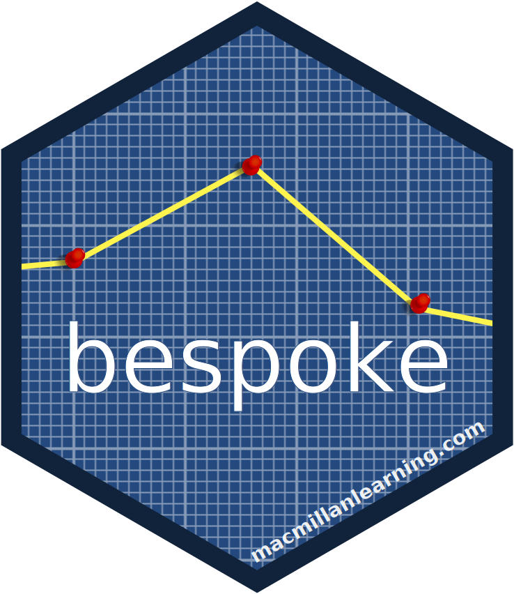

Prepare bespoke_classification Data for Prediction
Source:R/bespoke_classification-predict.R
dot-predict_bespoke_classification_bridge.RdPrepare bespoke_classification Data for Prediction
Arguments
- type
A single character. The type of predictions to generate. Valid options are:
"class"for "hard" class predictions."prob"for class probabilities.
- model
A
bespoke_classificationmodel object. hardhat switches to model from here forward, I think because the object has to actually be a model at this point for anything to make sense, and they don't have to fight the predict generic for the name.- predictors
Forged predictor data.